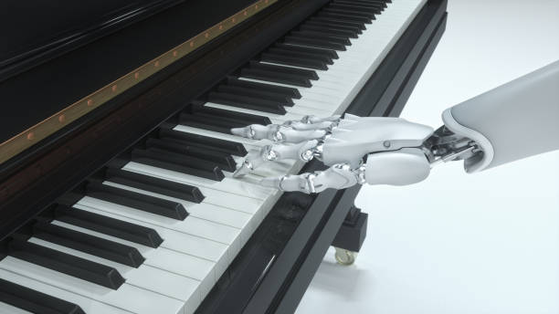

¿Qué es la musica?
La música es una forma de expresar lo que sentimos a través de sonidos y ritmos. Está presente en nuestra vida diaria, ya sea cuando estamos felices, tristes o simplemente queremos relajarnos. Además, existen diferentes tipos de música para todos los gustos y cada persona tiene su propio estilo favorito.
Historia de la música
La música existe desde hace miles de años. Al principio, las personas utilizaban su voz y objetos de la naturaleza para crear sonidos y ritmos. Con el paso del tiempo, fueron apareciendo nuevos instrumentos y diferentes estilos musicales. Hoy en día, la música ha evolucionado bastante y podemos disfrutar de muchos géneros gracias a la tecnología.
La importancia de la música
La música es importante porque forma parte de nuestra vida diaria. Nos acompaña en diferentes momentos, ya sea cuando estamos felices, tristes o queremos relajarnos. Además, nos permite expresar nuestros sentimientos y conectar con otras personas.
Evolución de la música
La música ha cambiado mucho con el paso de los años. Antes se escuchaba principalmente en radios, discos de vinilo y casetes, pero con el avance de la tecnología aparecieron los CD y las plataformas digitales. También fueron surgiendo nuevos géneros y estilos musicales. Hoy en día podemos escuchar nuestras canciones favoritas desde un celular y en cualquier momento.
